← 返回阅读库 · 原论文目录
论文讲解阅读文档 · 新模型 · v088
Masked-attention Mask Tr. for Universal Image Segmentation[2112.01527]
视频时长 00:08:01；讲解文字 4,048 字符；提取讲解画面 40 张。按视频原顺序阅读，每段文字保留时间戳。
文字来自整段视频的自动语音转写，按自然停顿分段，并与 PPT / 论文页面 / 演示画面对齐。未将讲解压缩为摘要；术语、数字和口述公式请结合画面及原论文核对。 阅读稿已校正规范部分明确术语误识别；原始逐字稿和每处修改记录另行保留。
讲解画面为源视频截图（640×360），不是可编辑 PPT 文件。全片按每秒 2 帧扫描内容变化，逐步展开页保留；连续动画保留代表画面。清晰度受源视频限制。
下载完整资料包 · 含离线 HTML、PDF、Word、全部 PPT 画面和字幕。
原论文与材料
Masked-attention Mask Transformer for Universal Image Segmentation · 下载完整 PDF（20 页）
按时间阅读
00:00:00–00:00:21 · 画面 001
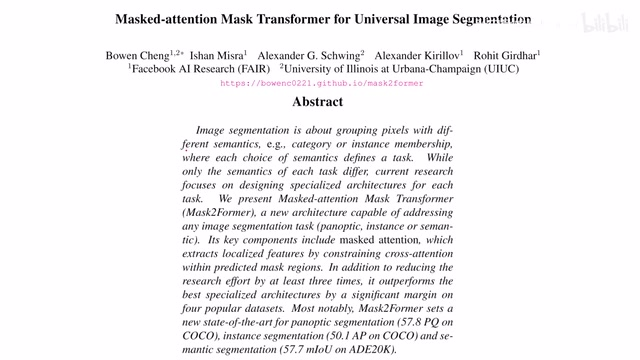
00:00:00–00:00:21 · 画面 001大家好啊，今天我们来快速水一篇论文，Masked-attention Mask Transformer for Universal Image Segmentation。这篇呢是之前我们介绍的那个 MaskFormer，它的后续，那作者呢还是基本上同样一批人。那么下面呢我们就来看，在之前的这个 MaskFormer 的基础上，本文提出了哪些改进呢？那么首先一个快速的 recap、MaskFormer 它的核心的贡献呢在于，原来我们做 Segmentation 的时候呢
00:00:21–00:01:23 · 画面 002
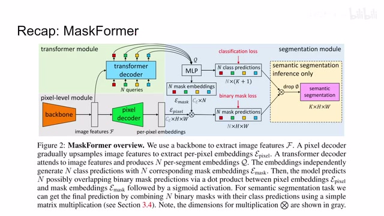
00:00:21–00:01:23 · 画面 002是根据每个 pixel 的 embedding，然后呢独立的去预测这个 pixel 它是属于哪一个类别的。那 MaskFormer 呢与之不同呢，是把我们的这个 feature 拿出来，扔到一个 transformer decoder 里面。那么这个 decoder 呢根据每一个类别产生 embedding 啊，embedding 呢我们就可以做 mask，做这个 classification。这样子呢，我们的这个 maskembedding 呢出来能够得到一个这一个类别的它的这个形状，这个 mask。那同时呢，根据这个 embedding 呢，我们可以直接把这个 classification 这个类别它属于什么类给它推测出来。那么这样子呢就告别了说，我们在每一个像素的这个 feature 上做这个 prediction，是一种更加优雅的做法。那么在这篇文章里面呢，作者主要是更新了这个 transformer decoder 的部分，我们来看本文提出的主要的改进吧
00:01:23–00:01:43 · 画面 003
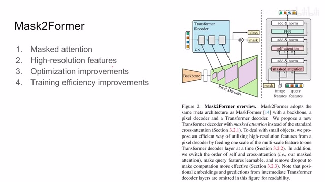
00:01:23–00:01:43 · 画面 003那么本文的改进呢，主要是包括这个 mask 的 attention，还有这个 high resolution features，本质上是一个金字塔。那么剩下的一些细节的关于训练上的还有这些 optimization 上面的这些改进呢，能够帮我们提高他的训练的速度。那么下面我们继续来看这个 mask 的 attention 是怎么回事
00:01:43–00:02:29 · 画面 004
00:01:43–00:02:29 · 画面 004那么首先呢，我们知道 transformer decoder 里面它是有一个 mask attention，就是控制哪两个 token 它们之间能够产生 attention。在这里呢，作者呢使用了一个大胆的假设，就是说我们在做 embedding 的时候，我们只需要 foreground 这些区域它们之间相互做 attention 就可以了。也就是原来在 MaskFormer 里面，每一个像素都跟整张图像做这个 attention那么现在呢，这个像素呢只跟和自己同一个类别的都是同一个 query 的这些像素啊，他们之间相互做 attention。那么这个呢是本文相对于前作的最主要的区别，最核心的一个贡献。那么继续我们来看前作里面对吧，这个 query 和 key 进来这里的这个 key 和 value 呢都是从图像的 feature 里面来，query 呢是从我们之前这个 query feature 里面过来的，他们的这个 attention softmax 的啊这些东西那这个呢是我们前作的 MaskFormer
00:02:29–00:02:30 · 画面 005
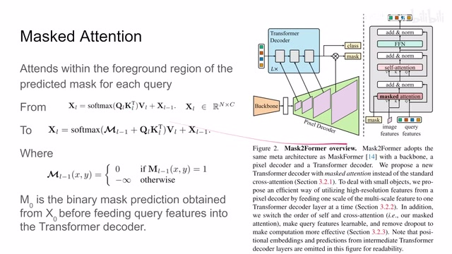
00:02:29–00:02:30 · 画面 00500:02:30–00:02:37 · 画面 006
00:02:30–00:02:37 · 画面 00600:02:37–00:02:38 · 画面 007
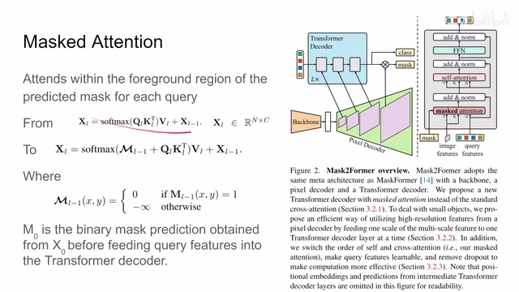
00:02:37–00:02:38 · 画面 00700:02:38–00:03:33 · 画面 008
00:02:38–00:03:33 · 画面 008那我们在本作中呢，我们呢引用了这个 mask，其实这个 mask 也就是标注了我每一个 query 这里，一个 query 代表是一个类别嘛，每一个 query 它的这个对应的 mask，在这个 mask 里面的这些像素它们相互做 attention，超过了这个 query。也就是说我们认为不是这一类的这个像素呢，我们就不可能做 attention。那来到这边我们看到这个 decoder 结构啊，我们先不要在意它跟其他的 decoder 呢有一个很显著的区别，我们先不要管它我们来重点呢看到这个 mask attention 的部分，你可以看到呢这里我们有 image features，它是从这个 pixel decoder 里面过来的，我们根据它呢对于每个像素提取这个 value 和 key，然后 query 呢是我们的 query features，这个呢它的实现我们后面也会讲，它呢区别于前作原来前作是 0 嘛，现在是 learnable 的这个 vector，它们呢先做这个 mask attention，那么这个 mask 应该怎么产生呢，我们来快速回顾一下这个 MaskFormer 里面
00:03:33–00:04:20 · 画面 009
00:03:33–00:04:20 · 画面 009我一看到呢这些每个 token 呢，我是要每个 query 出来之后呢，过一个 mlp 产生一个 embedding，那么根据这个 embedding 呢，我们再和这个 pixelembedding 结合就能够得到这个关于 mask 的 prediction，那么这个 mask 呢，也就是我们这里输入的 mask也就是说，对于第 0 层的这个 Decoder 来说，我们还没有经过这个 Transformer Decoder，首先呢把这些 Query 送到一个 MLP 里面，然后呢预测出这个 Mask 出来，然后呢我们再做这个 Decoder 一层一层往下做可以了，那么到这里呢，比如说过完一层我们有了新的 Query，那么同样的新的 Query 送到 MLP 里面做一个 Mask 出来，然后呢加上新的这个 Image Feature，为什么叫新的呢，我们后面马上会讲，然后呢再重复这个 Decoder 过程就可以了
00:04:20–00:04:21 · 画面 010
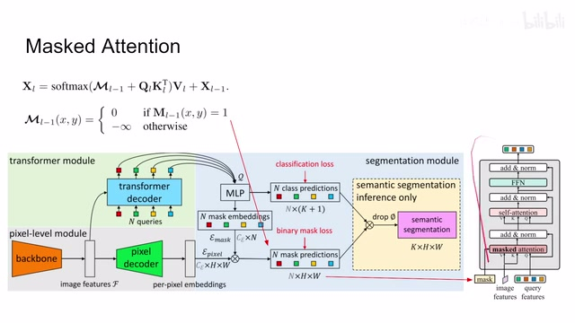
00:04:20–00:04:21 · 画面 01000:04:21–00:04:38 · 画面 011
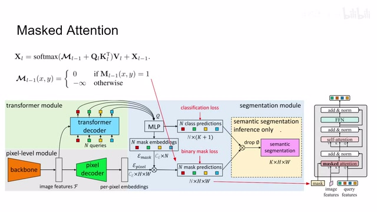
00:04:21–00:04:38 · 画面 011那么这个呢就是核心的这个 mask 的 attention 它的这个原理，那这里呢你也理解为什么这里 query feature 不再是这些 zero 而是一个个 learnable 的 feature，因为你在过这个 transformer decoder 之前你要根据这些 feature 呢先预测出一个 mask 来，那么这个呢是一个必要的更改，那么接下来我们看到这个 high resolution features 它的本质呢就是一个图像的金字塔，这里呢作者选用了原始图像的这个长宽的三十二分之一十六分之一和八分之一的
00:04:38–00:04:52 · 画面 012
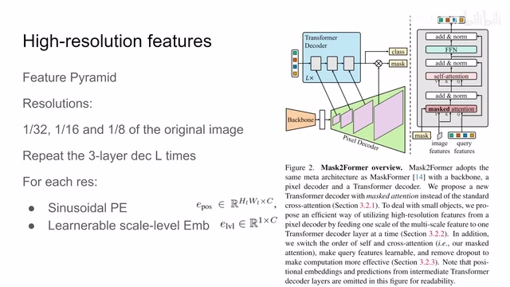
00:04:38–00:04:52 · 画面 012这么三个尺度，把这三个尺度的这个图像的 feature 呢，这个 imagefeature 对吧，送到相应的 transformer decoder 里，也就是说第一层是这个三十二分之一这个尺度的啊，做完一层 decoder 得到这个 query，然后第二层呢是这个十六分之一尺度的
00:04:52–00:04:53 · 画面 013
00:04:52–00:04:53 · 画面 01300:04:53–00:05:00 · 画面 014
00:04:53–00:05:00 · 画面 01400:05:00–00:05:01 · 画面 015
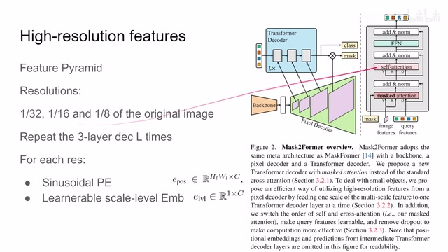
00:05:00–00:05:01 · 画面 01500:05:01–00:05:03 · 画面 016
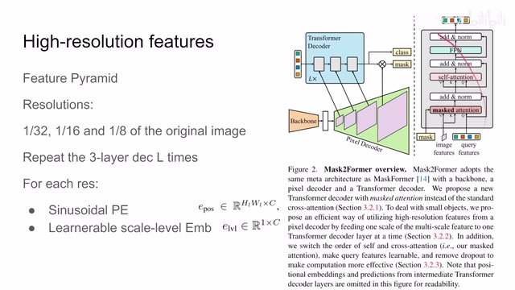
00:05:01–00:05:03 · 画面 01600:05:03–00:05:08 · 画面 017
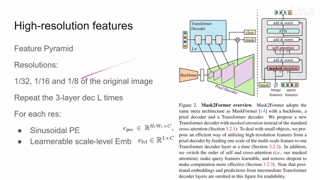
00:05:03–00:05:08 · 画面 017啊，在做同样的这么一个 decoder 做，然后呢重复这样子呢，不断的去重复这个三层的这样一个结构，重复 l 次，比如说这里做的是个 L 等于 3，所以这一共呢这个 transformer decoder 里面有九层这样的一个结构啊，这个呢就是作者设计的这个 feature pyramid，而对于这个每一个 resolution 来说呢，首先是一个正弦的这个 position 的 embedding
00:05:08–00:05:12 · 画面 018
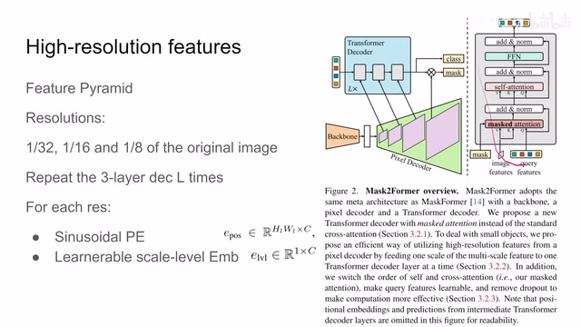
00:05:08–00:05:12 · 画面 01800:05:12–00:05:19 · 画面 019
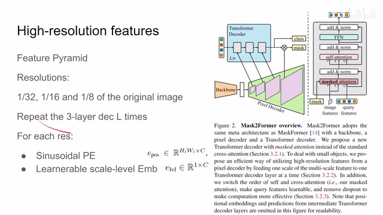
00:05:12–00:05:19 · 画面 01900:05:19–00:05:20 · 画面 020
00:05:19–00:05:20 · 画面 02000:05:20–00:05:23 · 画面 021
00:05:20–00:05:23 · 画面 02100:05:23–00:05:28 · 画面 022
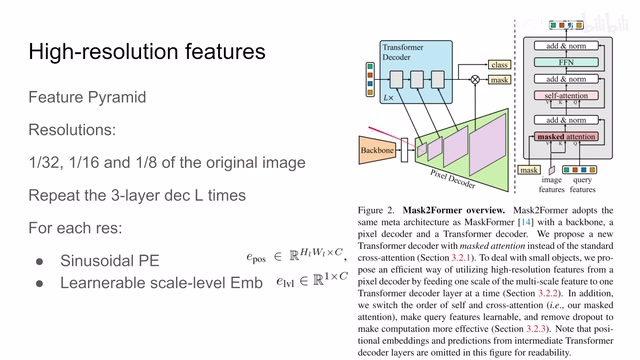
00:05:23–00:05:28 · 画面 02200:05:28–00:05:32 · 画面 023
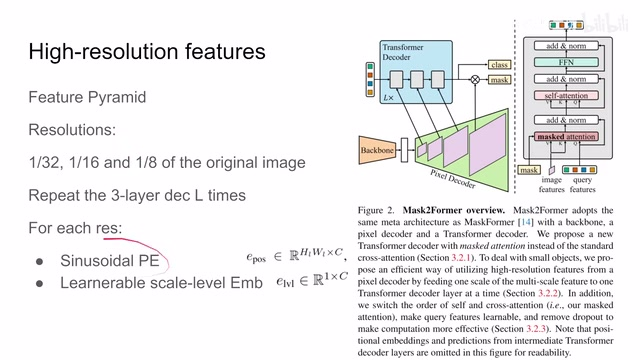
00:05:28–00:05:32 · 画面 023很常规的操作，同时呢作者还引用了一个 E 乘 C 的这个 learnable scale level 的这个 embedding，它呢用来控制每一个 channel 这个 scale
00:05:32–00:05:40 · 画面 024
00:05:32–00:05:40 · 画面 024那么这个呢就是作者如何应对这个 high resolution features，就是遇事不决金字塔嘛，对不对，那么金字塔之后呢，我们再来关注一下作者在这个之前的 MaskFormer 之上做了哪些细节的调整，首先呢我们之前说过，你可以看到这个 transformer decoder 呢，它跟我们之前的研究的这个 decoder 它不太一样，那么区别在哪呢，我们今天这个 transformer decoder 呢，一上来呢先做这个 token 之间的这个 self attention
00:05:40–00:05:44 · 画面 025
00:05:40–00:05:44 · 画面 02500:05:44–00:05:45 · 画面 026
00:05:44–00:05:45 · 画面 02600:05:45–00:05:46 · 画面 027
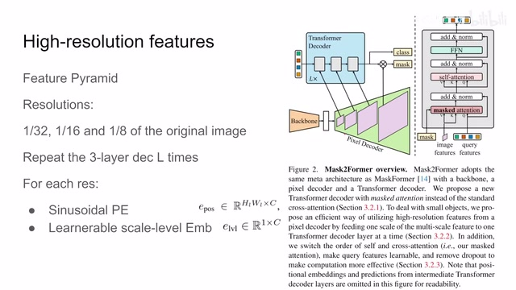
00:05:45–00:05:46 · 画面 02700:05:46–00:06:27 · 画面 028
00:05:46–00:06:27 · 画面 028然后呢再做这个 attention 是引入了这个 encoder 过来的这些 key 和 value，那这里呢作者把这个顺序更改了一下，因为这里一上来假如说你先做这个 selfattention 对着 query 之间相互做这个 selfattention 它本来就没有任何图像的信息，这样做出来也没有什么意义所以呢，这里作者把这个顺序给它更改了一下。那么第二改动呢，之前我们也说了，这个 query feature，因为一上来我们要用这个 query feature 来预测这个 mask，所以呢，现在 query feature 呢是 learnable。那么第三个呢，是作者发现这个 dropout 会影响我们的这个模型的性能，同时让我们这个训练速度减慢，所以呢，直接把 dropout 去掉了。那么此外呢，作者为了增加这个训练时候的这个效率呢，他用这个采样点来替代整个这个 mask。
00:06:27–00:06:28 · 画面 029
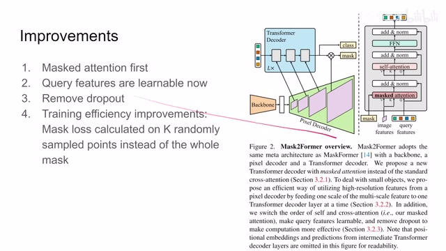
00:06:27–00:06:28 · 画面 02900:06:28–00:06:40 · 画面 030
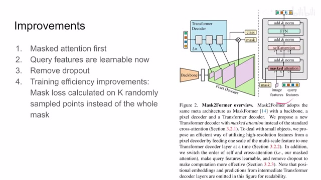
00:06:28–00:06:40 · 画面 03000:06:40–00:06:43 · 画面 031
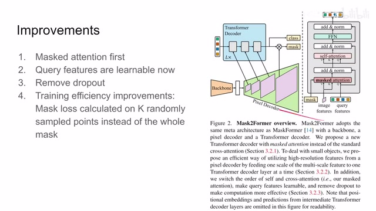
00:06:40–00:06:43 · 画面 03100:06:43–00:06:47 · 画面 032
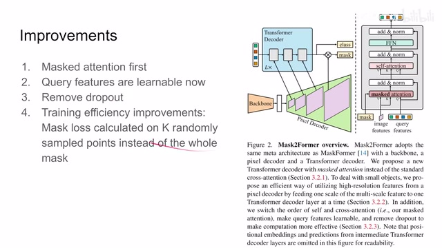
00:06:43–00:06:47 · 画面 03200:06:47–00:06:48 · 画面 033
00:06:47–00:06:48 · 画面 03300:06:48–00:07:03 · 画面 034
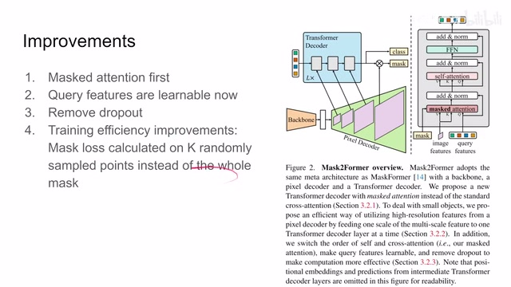
00:06:48–00:07:03 · 画面 034那简单来说呢，就是原来我们计算这个 loss，那都是一整张图，每一个像素它的 mask 的形状对不对，它的分类呢，这个也够对不对，对不对，这样一整张图它非常占内存，而且效率很低。那么这里呢做的就是这个随机采样几个点，用采样的方法，importance sampling 这些东西，相当于用数量更少的这个像素点来去形成这个 loss，这样子呢能够大幅节约我们训练每一张图的时候使用的内存。
00:07:03–00:07:04 · 画面 035
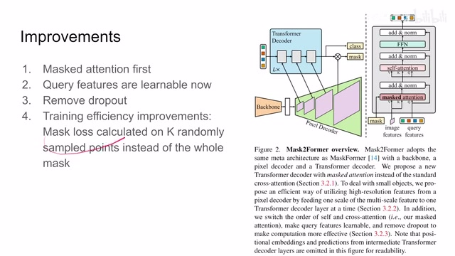
00:07:03–00:07:04 · 画面 03500:07:04–00:07:33 · 画面 036
00:07:04–00:07:33 · 画面 036那么关于这个呢，感兴趣的朋友呢可以看他的引用。好的，那么以上呢就是本文的主要的技术贡献啊，快速回顾一下，那么首先这个 MaskFormer 对吧，这个 decoder 这个结构特别的一个结构，然后呢是用这个 multi-scales 的方法，同时呢加上了我们这么多的这些改进。好的，那么下面我们来看作者汇报的一些结果，比如 COCO 上这个全景分割对吧，可以看到本文的方法的收敛原来快多了，而且呢效果非常好。
00:07:33–00:07:35 · 画面 037
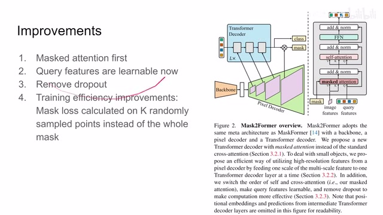
00:07:33–00:07:35 · 画面 03700:07:35–00:07:38 · 画面 038
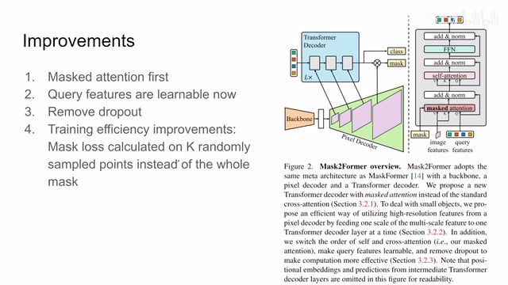
00:07:35–00:07:38 · 画面 03800:07:38–00:08:01 · 画面 039
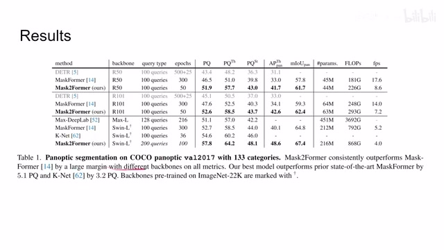
00:07:38–00:08:01 · 画面 039等等等等了，那么作者还汇报了更多的任务还有这个 ablation 这些东西，很详细的实验，非常推荐的你去原文查看。好的，那么以上就是我对这个论文的一个快速的一个介绍，那么感谢您的收看，再见。
00:08:01–00:08:01 · 画面 040
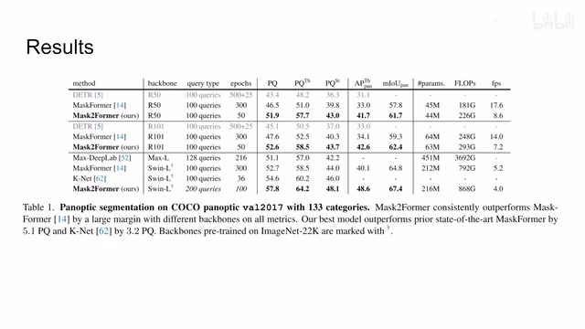
00:08:01–00:08:01 · 画面 040转写与来源说明 · 0 个自动复核提示
保留 20 个原始语音片段，0 个片段触发自动复核提示。提示仅用于定位可能的术语、重复或识别问题，不等于已确认错误。
讲解画面为源视频截图（640×360），不是可编辑 PPT 文件。全片按每秒 2 帧扫描内容变化，逐步展开页保留；连续动画保留代表画面。清晰度受源视频限制。
原视频：paper/合集_2026-10-16_新模型/[论文速览]Masked-attention Mask Tr. for Universal Image Segmentation[2112.01527].mp4
SHA-256：4f578ced00b42259242cafae9f5b1577861602a84a5f9ca8540b4387f70872c7
全文按视频语音与画面制作。原论文可从上方链接下载；完整资料包保留全文、原始逐字稿、字幕和校对记录。